AI Academy · Level 2 · Grade 7 · Week 10 · Student lesson
Human Classifier Simulation
Learn to understand, design, build, test and explain AI systems responsibly.
Project: Transparent Book Recommender
Before you start
Week 3: trace combined conditions at their boundaries.
Plan time to read, investigate and explain. Keep predictions separate from observations.
Student lesson · 1 of 16
Your mission
Your learning target
I can construct a classifier with a stated input format, selected rule and recorded output.
I can trace valid, boundary and invalid inputs through different paths.
I can distinguish an input check from evidence that a prediction is correct.
Remember before reading
Close your notes first. A rough first answer helps us choose the right starting point; it is not a score for your ability.
Without opening the old lesson, explain one key idea from Features and Distractors. Give an example and a mistake that the idea helps you avoid.
Without opening the old lesson, explain one key idea from Rows Columns and Data Types. Give an example and a mistake that the idea helps you avoid.
Without opening the old lesson, explain one key idea from Trace Tables. Give an example and a mistake that the idea helps you avoid.
After trying, check the relevant lesson or ask your teacher. Change the part of your explanation that the evidence shows was wrong.
Week 10: Human Classifier Simulation
A classifier applies a learned or designed boundary to features.
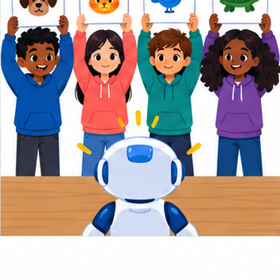
THINKER MISSION
Train classmates on labeled creatures and compare their rules.
Thinker name and date:
Readiness for the connected explanation
A fitted rule predicts tall at a height of at least 6 cm and short otherwise. Predict at 5 and 6 cm. What should you check before applying it to a blank height?
This week’s end goal
By the end, I can simulate a classifier with explicit requirements and missing-value behavior.
Student lesson · 2 of 16
Notice the evidence
PICTURE STORY
Notice → Predict → Explain
Begin with visible evidence. Do not explain more than the picture and information support.
MYSTERY
The learners must use human classifier simulation to solve a problem. What information do they have? What decision or calculation do they make? What would count as evidence that it worked?
Three observations (what you can point to):
My prediction and the clue supporting it:
A closer explanation
Your task is to build a paper classifier that another learner can operate without guessing your instructions. It will predict short or tall for imaginary towers. Use the threshold of 6 centimetres selected after adding the height 5 short example in Week 13. Name this selected model Tower1.
Write an input contract: one height recorded as a whole number of centimetres from 1 through 10, including both endpoints. Require the unit cm to be shown. This is a classroom design choice about what the procedure accepts. It is not a claim that every accepted height appeared in fitting or that towers outside this range cannot exist.
A complete classifier needs instructions for checking the input, applying Tower1 when the input is accepted, and recording the outcome. It must also say what happens when the input fails a check. The threshold alone does not provide these surrounding instructions.
Student lesson · 3 of 16
See how it works
VISUAL MECHANISM
Input → Process → Output
Trace the information. At each stage, ask what changed and how you could test it.
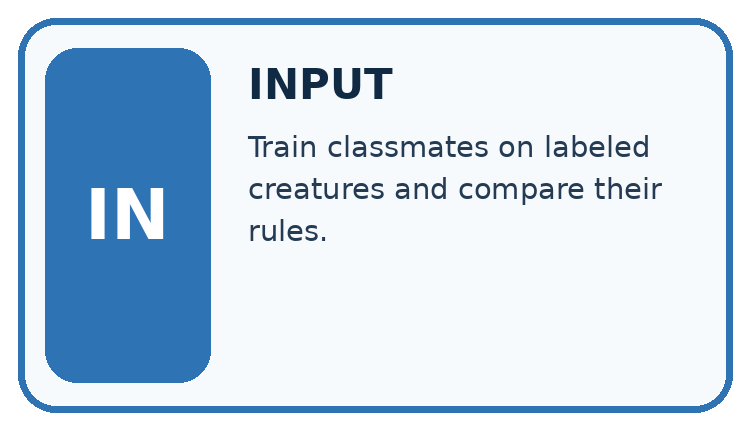
↓
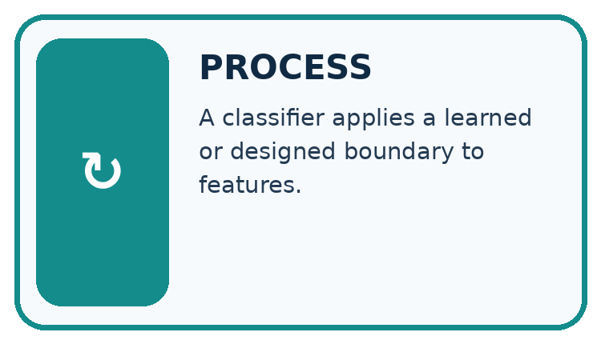
↓
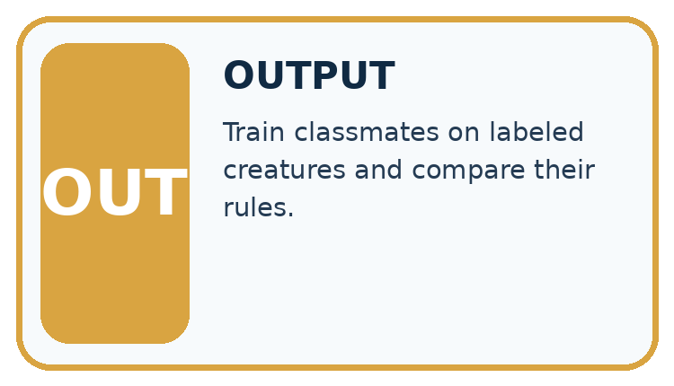
Which stage could fail even when the other two are correct? Explain:
A closer explanation
Three records through the Tower1 classifier
For every record, first check that a height is present and its stated unit is cm. Then check that it is a whole number from 1 through 10. If any check fails, record no prediction and the reason, then stop processing that record. Do not continue into the threshold comparison.
If all checks pass, compare the height with 6. At least 6 gives the prediction tall; otherwise give short. Record the original input, model version Tower1 and the prediction. For a rejected record, record the original input, Tower1, no prediction and a reason. Tower1 identifies the intended model even when its threshold was not used.
Connect the picture and the explanation
Point to the input, the deciding step and the result in this week’s visual. Explain the same step in ordinary words. A picture helps when you can say what each part represents.
Student lesson · 4 of 16
Compare the cases
CASE GALLERY
Four Tests, Four Kinds of Evidence
A system is not understood until it survives more than one comfortable example.


NORMAL CASE: predict and name evidence. BOUNDARY CASE: predict and name evidence.


MISSING INFORMATION: predict and name evidence. TRANSFER CASE: predict and name evidence.
Which case is most likely to reveal a hidden assumption? Why?
Change one thing in the pictured case
Change: Supply M’s pages as 101.
Prediction: M is now rejected rather than awaiting page review.
Reason: The required field is known but fails the maximum-length condition.
Student lesson · 5 of 16
Words that unlock the idea
VOCABULARY LAB
Words You Can Use to Reason
A definition matters when you can recognize the idea, use it, and contrast it with a near-miss.
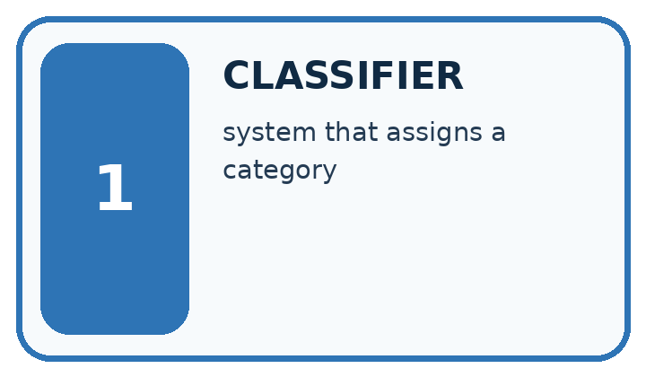
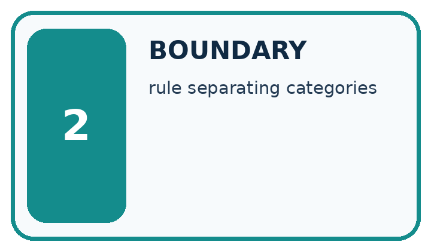
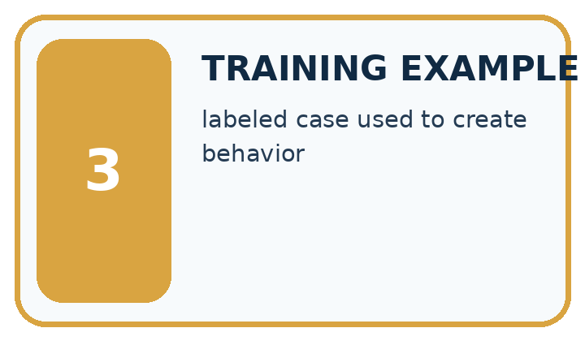
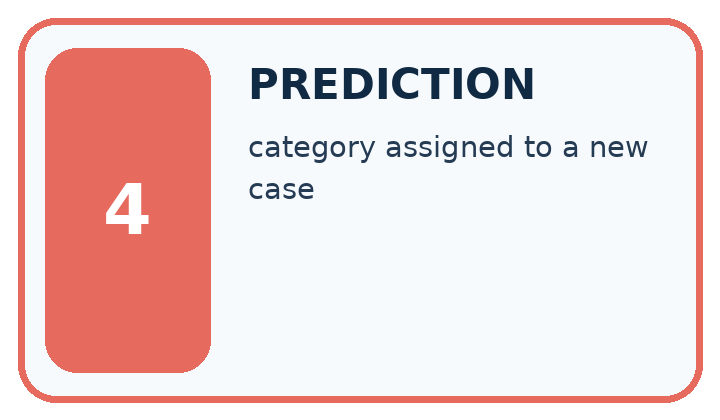
| Word | My own example | Not this / boundary |
|---|---|---|
| classifier | A rule or model that assigns an input to a category. | |
| boundary | A dividing condition between categories, actions or allowed behaviours. | |
| training example | An input and any associated label used to fit a model. | |
| prediction | An estimated category, value or outcome that must be distinguished from established fact. |
Words used in the closer explanation
| Word | Meaning |
|---|---|
| Input contract | The format and conditions an input must satisfy for a procedure to accept it |
| Validation | Checking whether an input satisfies the stated contract |
| No prediction | An explicit outcome when the classifier does not assign a category |
| Model version | A name that identifies the particular model used for a prediction |
Student lesson · 6 of 16
Follow a worked example
WORKED EVIDENCE
Reason Step by Step
Predict first. Then check each step. A correct answer without visible reasoning is incomplete evidence.
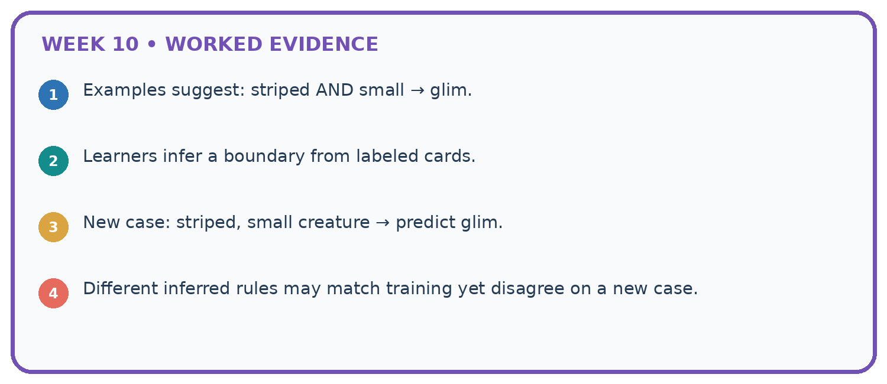
1. Examples suggest: striped AND small → glim.
2. Learners infer a boundary from labeled cards.
3. New case: striped, small creature → predict glim.
4. Different inferred rules may match training yet disagree on a new case.
Recalculate, retrace, or restate the reasoning in your own representation:
CHECK Did the evidence answer the exact question? Did the total, path, or source record stay consistent?
A closer explanation
| Input | Contract result | Outcome |
|---|---|---|
| 1 cm | Accepted at lower endpoint | Predict short |
| 9 cm | Accepted | Predict tall |
| 10 cm | Accepted at upper endpoint | Predict tall |
| 0 cm | Outside 1 through 10 | No prediction |
| 60 mm | Unit is not cm | No prediction |
| 4.5 cm | Not a whole number | No prediction |
A valid 9 cm input receives a tall prediction, but the input check does not establish that the prediction matches its comparison label. Validation checks the contract. Evaluation checks predictions against appropriate evidence. Keep these questions separate.
Sixty millimetres equals six centimetres, but this version accepts cm records only. It does not contain a conversion step. Ask for a correctly recorded cm measurement or deliberately design and check a conversion step in a new version. Do not silently treat the digits 60 as centimetres. A missing height must not become an invented zero either.
Learn from the worked case
Cover the result before checking it. Say what is given, choose the procedure, and follow one step at a time. Then uncover the result and explain your first mismatch. Ask why a step is allowed, not only what number it produces.
A pictorial worked case: Human Classifier Simulation
A fictional librarian wants illustrated mystery books with at most 100 pages.
The facts we will use
Written rule: choose only genre mystery AND illustrated True AND pages<=100.
Rows J=(mystery,True,100), K=(mystery,False,90), L=(science,True,80), M=(mystery,True,blank). Missing required fields request review.
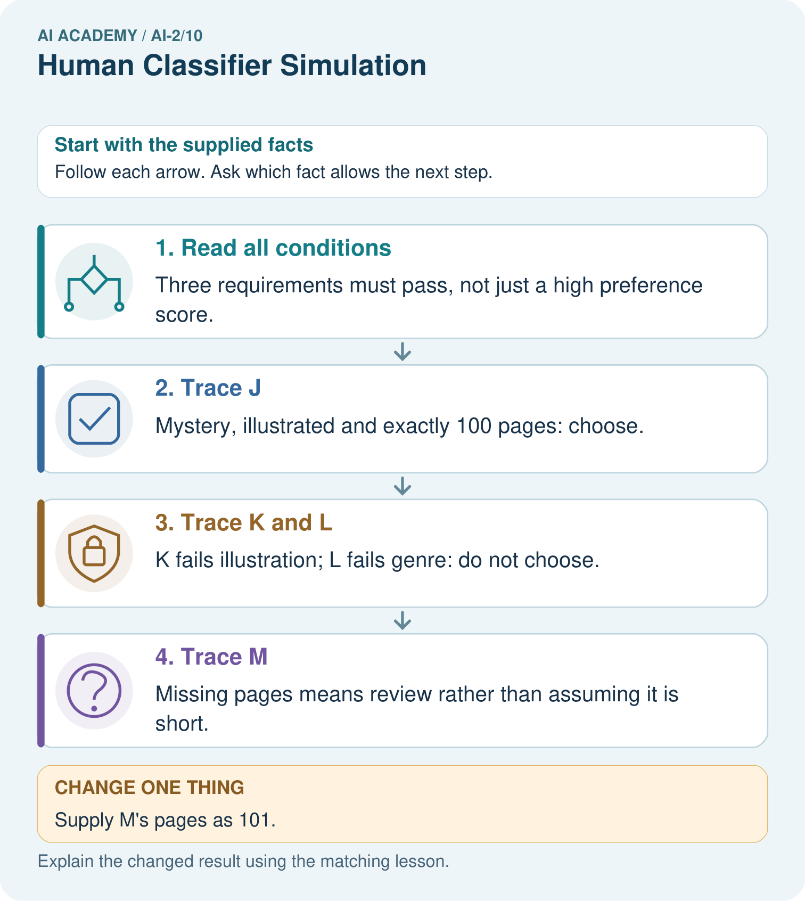
Read the picture one step at a time
Why this result follows
This human simulation lets students inspect every decision without needing a trained model. Equality matters at 100. Known failures give reasons for rejection; M lacks enough information for the page check. The order should not turn blank into zero or quietly ignore a required field.
What this example does not establish
This declared rule checks eligibility, not whether an eligible book will actually be enjoyed.
Read the labelled picture: Why are J and M initially treated differently even though both are illustrated mysteries?
Change one thing: Supply M’s pages as 101. Predict the result before checking the explanation. What remains the same?
Student lesson · 7 of 16
Find and repair a mistake
ERROR DETECTIVE
Compare → Diagnose → Repair
Do not patch the answer. Find the earliest unsupported assumption, wrong step, or weak evidence.
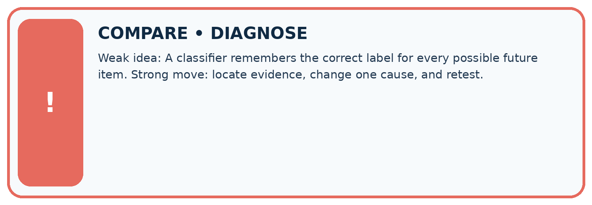
| Evidence record | Expected | Actual | Likely cause / next test |
|---|---|---|---|
| normal case | works | ||
| boundary case | stated rule | ||
| missing input | safe response | ||
| fresh transfer | generalizes |
Repair one cause. Why is this repair better than changing several things?
A closer explanation
The classifier reports a prediction or no prediction. It does not decide what a person must do with a tower. A separate classroom procedure might ask someone to remeasure a rejected input or compare a prediction with a recorded label. Write that action separately from the predicted category.
No prediction is not a third tower size. It records that this procedure did not assign short or tall. Count and investigate such records when evaluating the whole system; hiding them could make a system look more useful than it is.
Student lesson · 8 of 16
Practise together
LOGIC STUDIO
Trace Before You Run
Block code, pseudocode, tables, and diagrams are different ways to expose the same reasoning.

SET evidence_record PREDICT expected_result RUN one normal case and one boundary case COMPARE actual_result with expected_result IF different: locate first cause; change one factor; RETEST EXPLAIN result, limitation, and next safe step
Trace one input. Which line changes the state or chooses a path?
A closer explanation
Write the procedure as numbered steps or connected boxes with labelled branches. Give it to a partner who follows only what you wrote. The partner should record each check and stop point, including equality at the threshold and at both accepted range endpoints.
A partner finding an unclear branch gives useful design feedback. Revise the instruction and retrace the affected examples. Keep the model name and threshold visible so a change to the fitted rule is not confused with a correction to an instruction.
Practise with less help: Construct both outcome paths
Use workbook W2 for the connected example “Constructing a classifier”. First fill the input and rule boxes. Try the middle steps before asking for a hint. After a hint, try the next step yourself.
| Plan | Do | Check |
|---|---|---|
| What is given? Which rule or procedure applies? | Record each intermediate step. | Does the result follow? What remains unknown? |
Explain your trace to a partner. Your partner points to one step to check. Swap roles on the next case. Each person writes their own explanation.
Check your reasoning
Use the worked case for Constructing a classifier. Proposed explanation: “Any numeric input must receive a category”. Decide whether this explanation is supported. Point to the step or supplied fact that decides; explain your repair if needed.
Answer on your own before discussion. If you are unsure, say which step you need help with.
Explain the picture
Why are J and M initially treated differently even though both are illustrated mysteries?
This is supported practice. Keep the separately named independent case for an attempt before feedback.
Student lesson · 9 of 16
Run the investigation
EVIDENCE LAB
Predict → Test → Record → Explain
Keep expected and actual results separate. Surprises are useful data when recorded honestly.
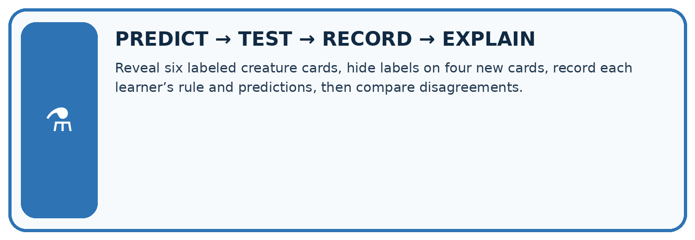
Reveal six labeled creature cards, hide labels on four new cards, record each learner’s rule and predictions, then compare disagreements.
| Test / input | Prediction | Actual | Evidence / calculation | Change or keep? |
|---|---|---|---|---|
| normal | ||||
| boundary | ||||
| missing | ||||
| fresh transfer |
What did the hardest test teach you that the normal test did not?
Plan → try → check
Before trying: what do I expect, and why? While trying: which step could first go wrong? Afterwards: what did I actually observe, and what should change? Keep “not run” if you only traced the procedure.
Student lesson · 10 of 16
Build your understanding
MASTERY
From Knowing the Word to Owning the Idea
Move upward only when you can produce evidence without copying the worked example.

1 • NAME: Define the concept without repeating the textbook.
2 • TRACE: Show the information, state, branch, calculation, or evidence path.
3 • APPLY: Solve a different example independently.
4 • CHALLENGE: Find a boundary case, counterexample, or unfair outcome.
5 • EXPLAIN LIMITS: Say when the result should not be trusted or used alone.
My strongest evidence of independent understanding:
Student lesson · 11 of 16
Connect your project
CUMULATIVE PROJECT
Transparent Book Recommender
Every week adds one inspectable piece. The system must show how it reached a result.
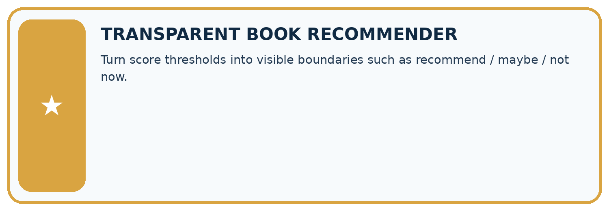
THIS WEEK’S CHECKPOINT Turn score thresholds into visible boundaries such as recommend / maybe / not now.
SYSTEM MAP Reader need → allowed inputs → transparent rule or score → ranked candidates → explanation → test record → human decision
What will you add, change, or verify in the project this week?
What should remain under human control?
RESPONSIBLE DESIGN Collect only necessary information. Show uncertainty and limits. Never confuse a ranking with a fact about a person.
Evidence for your project
Build a transparent filtering stage for the recommender, storing each failed or unresolved requirement in its explanation.
Student lesson · 12 of 16
Show what you know
INDEPENDENT MASTERY PROOF
Explain • Transfer • Test • Defend
Complete this page without copying the worked example. Your reasoning matters more than decoration.
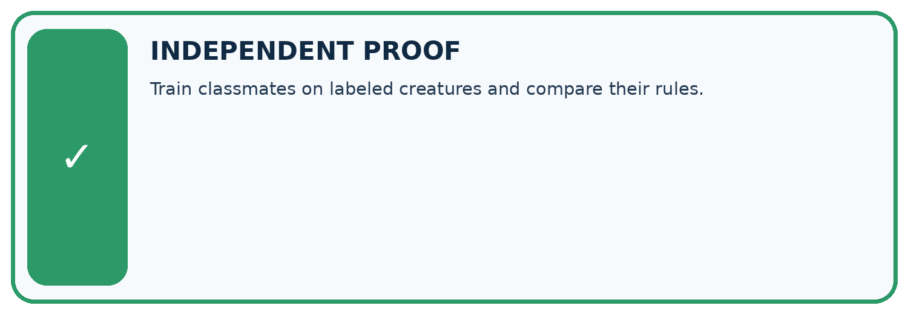
CHALLENGE Train classmates on labeled creatures and compare their rules.
1. My fresh example, trace, calculation, or design:
2. My evidence that it works (include a boundary or missing-data case):
3. One limitation, fairness concern, or situation needing human review:
SELF-CHECK □ I explained the mechanism □ I used evidence □ I tested a fresh case □ I named a limitation □ I can answer ‘why?’
Student lesson · 13 of 16
Study a complete case
Week 10 Worked case
Use the supplied details to practise the weekly concept before attempting the independent question. This case extends the illustrated lesson.
The situation
Recommend if adventure AND pages<150; otherwise Other.
The question
Trace A=(adventure,120), B=(adventure,180), C=(science,90).
Worked explanation
A is Recommend. B fails length; C fails genre. Show both conditions.
Explain it in your own words
Which detail supports the answer, and why does it matter?
Trace the supplied case visually
Both conditions must pass
| Evidence or stage | Value or result |
|---|---|
| Adventure, 120 pages | Genre yes, length yes → Recommend |
| Adventure, 180 pages | Genre yes, length no → Other |
| Science, 90 pages | Genre no, length yes → Other |
Recommend if adventure AND pages<150; otherwise Other.
Trace A=(adventure,120), B=(adventure,180), C=(science,90).
A is Recommend. B fails length; C fails genre. Show both conditions.
Student lesson · 14 of 16
Try a new case independently
Independent case: Changed independent case
A written rule selects science books with fewer than 140 pages. Trace science/139, science/140, history/90 and missing-genre/90. Policy: missing required information means request it.
Attempt this case before feedback. Record any help. Earlier examples below are further practice; a case already practised with feedback cannot establish fresh transfer.
Week 10 Independent application
Close the worked explanation. Apply the idea to this different question without copying.
A human classifier uses sports topic means sports shelf. Classify a sports book and an unreadable cover. State what evidence is missing in the second case.
My answer, with a trace, calculation or supporting evidence
Create and test
Change one relevant detail. Predict the result before testing. Include a boundary or missing-information case when it helps reveal a limit.
My changed input and expected result
Connect to your project
Turn score thresholds into visible boundaries such as recommend / maybe / not now.
The evidence I will keep
Your teacher has the independent answer and scoring criteria. Complete the matching workbook week to keep your practice evidence together.
Transfer practice from the original programme
Recommend a book only if genre is science AND pages<=150. Classify science/150, science/151, mystery/90 and missing-genre/80. State a missing-data policy.
Use feedback to improve
Attempt the independent case before hints. Record whether you worked alone, used a hint or followed a model. After feedback, fix the first unsupported step and explain why it changed. A later check uses a changed case, not a copied answer.
Student lesson · 15 of 16
Your lesson route
Start with this question: A fictional librarian wants illustrated mystery books with at most 100 pages.
| By the end, I can | How I will show it |
|---|---|
| Construct a classifier with a stated input format, selected rule and recorded output | Explain the deciding step, show a trace or test, and state one limit. |
| Trace valid, boundary and invalid inputs through different paths | Explain the deciding step, show a trace or test, and state one limit. |
| Distinguish an input check from evidence that a prediction is correct | Explain the deciding step, show a trace or test, and state one limit. |
Remember → watch and explain → try with help → investigate → try independently → keep project evidence. Your teacher may spread this lesson across several classes.
Keep your first prediction. Compare it with what the evidence shows and explain any change.
Student lesson · 16 of 16
Finish and return
Close your notes. Explain this goal in your own words: Construct a classifier with a stated input format, selected rule and recorded output
If you are unsure, return to the worked picture and explain one arrow. If you are ready, change an input or assumption and justify your prediction.
Save your workbook evidence. At the next review, try a different case before opening your old answer.